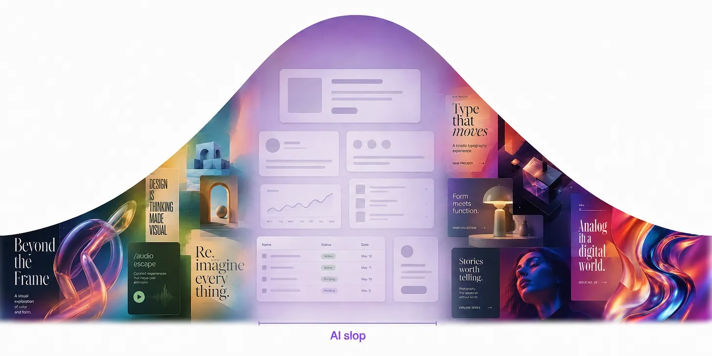
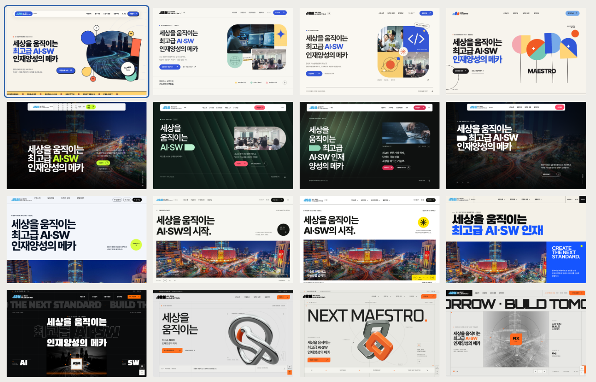

DESIGN EYE
레퍼런스로 방향을 정하고, 반복과 비교로 완성도를 높인다.
SLIDE1.md · 도입

사용자 첨부 이미지
→
추상적인 요청은 익숙한 색과 구조로 수렴하기 쉽다.
SLIDE1.md · §1
DIRECTOR
REFERENCE
사람이 레퍼런스로 방향을 정하고 Claude가 구현한다.
SLIDE1.md · §2
결과를 비교하며 품질 기준을 넘을 때까지 다듬는다.
SLIDE1.md · §2
→
스타일을 설명하는 형용사보다 실제 화면을 보여 준다.
SLIDE1.md · §3
Reference
Component
Font
Color
Design System
화면과 부품, 글꼴, 색, 디자인 규칙으로 취향을 구체화한다.
SLIDE1.md · §3
탐색 · 01
기본 프롬프트
“독특하고 무작위로”
독특하고 무작위로 만들어 달라는 요청만으로는 다양한 결과를 얻기 어렵다.
기본 프롬프트 전문
제 생산성 앱의 랜딩 페이지를 만들어 주세요.
무작위 요청 프롬프트 전문
제 생산성 앱의 랜딩 페이지를 만들어 주세요. 아주 독특한 결과물을
clone/how-to-turn-your-ai-into-a-world/index.html
탐색 · 01
긴 무작위 문자열에서 색 조합과 레이아웃, 타이포그래피의 영감을 얻는다.
프롬프트 전문
제 생산성 앱의 랜딩 페이지를 만들어 주세요.
다음 순서대로 진행해 주세요.
1. 셸 스크립트로 영문자와 숫자가 섞인 긴 무작위 문자열을
2. 그 문자열을 바탕으로 색 조합, 레이아웃, 타이포그래피 등
3. 직접 판단해서 이 방향을 실제 디자인으로 구현하고 멋지게
문자열은 디자인에 드러내지 마세요. 영감을 얻는 용도로만
clone/how-to-turn-your-ai-into-a-world/index.html
탐색 · 02
각 섹션을 비디오 게임의 한 장면처럼 만들되 랜딩 페이지의 역할을 유지한다.
프롬프트 전문
“제 생산성 앱의 랜딩 페이지를 만들어 주세요.
clone/how-to-turn-your-ai-into-a-world/index.html
탐색 · 02
동네와 건물이 각각 다른 기능을 나타내는 3D 도시를 만든다.
프롬프트 전문
“제 생산성 앱의 랜딩 페이지를 만들어 주세요. 등각
clone/how-to-turn-your-ai-into-a-world/index.html
탐색 · 02
극단적인 비대칭과 불편한 여백으로 익숙한 규칙에서 벗어난다.
프롬프트 전문
“제 생산성 앱의 랜딩 페이지를 만들어 주세요.
clone/how-to-turn-your-ai-into-a-world/index.html
탐색 · 02
AI 답변
아이디어를 최대한 많이 나열하고, 각각의 큰 방향만 짧게 제안받는다.
프롬프트 전문
제 제품에 과감하고 독특한 디자인 언어를 만들고
clone/how-to-turn-your-ai-into-a-world/index.html
탐색 · 02
AI 답변
원하는 질감과 피하고 싶은 표현을 구체적으로 전해 아이디어를 다듬는다.
프롬프트 전문
산업용 제어판:
• 만지는 느낌이 떠오르는 디자인을 생각하고 있습니다. 딸깍
• 처음에는 만화 같은 모습이나 실제 사물을 그대로 닮은
• 대신 구성 요소를 일관되게 만들고, 작은 부분에 특징을 넣어서
• 회색 그라데이션은 지루해 보일 것 같습니다. 질감이 더
제 취향을 바탕으로 이 아이디어를 더 다듬어 주세요.
clone/how-to-turn-your-ai-into-a-world/index.html
탐색 · 02
AI 답변
선택한 방향을 개념 검증용 페이지를 만들 프롬프트로 정리한다.
프롬프트 전문
AI 에이전트가 이 아이디어로 초기 개념 검증용(POC) 페이지를
AI가 작성한 프롬프트 · 그림에 표시된 범위
AI: ‘정밀한 산업 장비’라는 제어판 디자인을 보여주는 단일 페이지
다음 요소를 사용해 주세요.
분체 도장한 금속과 성형 가공한 장비에서 영감을 받아, 손으로 만질
이하 생략
clone/how-to-turn-your-ai-into-a-world/index.html
구체화 · 03
별도 디자인 평가자는 구현 과정 대신 현재 화면의 품질만 판단한다.
clone/how-to-turn-your-ai-into-a-world/index.html
구체화 · 03
스크린샷만으로 평가하고, 같은 기준으로 수정과 평가를 반복한다.
프롬프트 전문 · 1/2
이 디자인을 개선해 주세요. 어디에 집중할지 판단할 수 있도록 Fable 5
수정할 때마다 다음 절차를 따라주세요.
• 현재 디자인의 스크린샷을 찍어주세요.
• 새 대화 맥락에서 평가자를 호출하고 스크린샷만 전달해 주세요. 코드나
• 이 디자인이 추구하는 스타일을 평가하고, 최고 수준의 디자인
• 마지막으로 현재 디자인이 그 스튜디오 수준의 품질에 얼마나 가까운지
프롬프트 전문 · 2/2
평가자에게 보내는 프롬프트에는 다음 지침을 넣어주세요.
• 전체 구조와 구성을 넓은 관점에서 살피고, 작은 부분까지 확인해
• 너무 자주 쓰이거나 과한 표현, 그 밖에 AI가 만든 티가 뚜렷하게 나는
• 모호하게 설명하지 말고, 짧고 구체적인 의견을 제시해 주세요.
• 안전하거나 쉬운 선택에만 기대지 말고, 과감하고 분명하게 판단해
평가자가 독립적으로 10점 만점에 9점 이상이라고 판단해야 작업이
clone/how-to-turn-your-ai-into-a-world/index.html
구체화 · 03
같은 기준으로 평가와 수정을 반복해 처음의 스타일을 살리면서 개성을 더한다.
평가 후의 변화
똑같은 틀을 반복하던 디자인들이 이제 저마다 개성을 갖게 됐습니다. 그러면서도 처음에 의도한 전체적인 스타일은 유지합니다.
clone/how-to-turn-your-ai-into-a-world/index.html
구체화 · 03
눈으로 비교할 수 있는 예시와 명확한 품질 기준으로 평가한다.
나쁜 예
디자인이 AI가 만든 것처럼 보이지 않고
괜찮은 예
우리가 추구하는 스타일을 살펴보고, 최고
좋은 예
디자인 5개를 보여드리겠습니다. 4개는
반복 종료 기준
• 반복을 끝낼 기준을 신중하게 정하세요. 그렇지 않으면 평가자는 디자인이 충분히 좋다고 끝내 인정하지 않을 수 있습니다. 그러면 에이전트는 평가자를
clone/how-to-turn-your-ai-into-a-world/index.html
구체화 · 04
생성 이미지와 셰이더 또는 3D 효과를 함께 써 디자인에 개성을 더한다.
프롬프트 전문
디자인이 꽤 밋밋합니다. 이미지 생성을 활용해
이미지 생성에는 이 OpenAI API 키를 사용해
작업 결과가 제대로 보이는지 브라우저에서
clone/how-to-turn-your-ai-into-a-world/index.html
구체화 · 04
사용 환경에 맞춰 내장 기능, Codex CLI 또는 API를 연결한다.
Claude Code + ChatGPT · 요청 전문
Codex CLI로 이미지를 생성해 주세요. 설치되어 있지 않으면
API 키 파일 관리 · 요청 전문
Git에서 제외되는 .env.agents 파일을 만들고 이 API 키를
clone/how-to-turn-your-ai-into-a-world/index.html
구체화 · 05
단색 배경의 반복 재생 영상에서 배경을 제거해 풍부한 움직임을 표현한다.
프롬프트 전문 · 1/2
이 페이지의 이미지를 더 흥미로운 움직임이 있는 반복 재생 영상으로
프롬프트 전문 · 2/2
유리의 굴절 효과가 자연스럽게 보이도록 먼저 페이지 배경색 위에서 유리
이 fal.ai API 키를 사용해 주세요: sk-a1b2c3d4…
영상 생성과 배경 제거에 적합한 최신 모델을 찾아주세요.
clone/how-to-turn-your-ai-into-a-world/index.html
구체화 · 05
각 영상의 마지막 프레임을 다음 전환의 시작점으로 사용해 끊김 없이 잇는다.
프롬프트 전문
영상 모델을 사용해 몇 개의 화면 사이를 사용자 조작에 따라 전환하는 여행
• 처음에는 여행 가방이 공중 높이 떠 있게 해 주세요.
• 그다음에는 바닥에 내려앉아 뚜껑이 열리게 해 주세요.
• 마지막으로 짐이 위에서 내려와 가방 안에 가지런히 담기게 해 주세요.
이미지 생성 스킬로 첫 프레임을 만들어주세요. 그런 다음 그 프레임에서
이 fal.ai API 키를 사용해 주세요: sk-a1b2c3d4…
Seedance 2.5처럼 물리적 움직임을 잘 표현하고 장면의 일관성을 잘
clone/how-to-turn-your-ai-into-a-world/index.html
마무리 · 06
적용 전
적용 후
사진 중심의 격자 배열로 정리하고 발광 효과와 불필요한 상자를 없앤다.
원문 요청 전문
• 사진 중심의 격자 배열로 화면을 단순하게 정리해 주세요.
• 그라데이션, 발광 효과, 불필요한 상자를 없애주세요.
• Apple의 기본 앱처럼 느껴지는, 정말 간결한 디자인을 만들어주세요.
clone/how-to-turn-your-ai-into-a-world/index.html
마무리 · 07
이미 분명한 내용을 반복하는 작은 이름표는 대부분 없애도 된다.
너무 자주 쓰는 방식
제목 위에 붙이는 작은 설명: 이미 분명한 내용을 반복하는 이름표
더 나은 선택지
대부분은 없애도 필요한 정보가 줄어들지 않습니다.
clone/how-to-turn-your-ai-into-a-world/index.html
마무리 · 07
흔한 그라데이션 대신 이미지와 무늬 또는 패턴으로 변경한다
너무 자주 쓰는 방식
흔한 배경 그라데이션
더 나은 선택지
배경 이미지, 무늬 또는 단색을 사용합니다.
clone/how-to-turn-your-ai-into-a-world/index.html
마무리 · 07
지나치게 많은 카드와 상자를 격자나 타일처럼 평평한 배치로 바꾼다.
너무 자주 쓰는 방식
지나치게 많은 카드와 상자
더 나은 선택지
격자나 타일처럼 중첩이 적고 평평한 배치를 사용합니다.
clone/how-to-turn-your-ai-into-a-world/index.html
마무리 · 07
글꼴 1~2개와 스타일 2~4개로 시작하고 강조색과 기울임꼴을 아껴 쓴다.
너무 자주 쓰는 방식
너무 많은 글꼴, 글자 스타일과 글자 크기 단계
더 나은 선택지
글꼴 1~2개와 스타일 2~4개로 시작하고 꼭 필요할 때 늘립니다. 강조색과
clone/how-to-turn-your-ai-into-a-world/index.html
마무리 · 08
AI가 쓴 문구는 임시 글로 보고 사람이 모든 문장을 일관된 말투로 고친다.
작성자가 고친 문구 · 번역 전문
Lantern
데이터베이스가 느린 이유를 더는 짐작하지 마세요.
EXPLAIN ANALYZE 결과를 읽느라 오후를 허비하지 마세요.
대부분의 팀은 가입한 뒤 한 시간 안에 첫 번째 주요 문제를 찾습니다. 첫
clone/how-to-turn-your-ai-into-a-world/index.html
03 · CLAUDE CODE
01
찾기
02
전달
03
비교
04
기록
참고 자료와 목표를 한 프롬프트에 담고, 화면을 보며 고친다.
HOW_DESIGN_FROM_CC.md · §1 전체 흐름
03 · REFERENCE
Reference · Awwwards
Component · 21st.dev
Font · Fonts In Use
Color · Coolors
System · Branding Style Guides
화면, 부품, 글꼴, 색, 규칙에 맞는 자료를 따로 찾는다.
HOW_DESIGN_FROM_CC.md · §2 참고 자료 찾기
03 · CAPTURE
GoFullPage
사진 ✓ 색·글꼴 ×
ref/site1.png
→
이미지 경로와 함께 좋아하는 점과 피할 점을 적는다.
HOW_DESIGN_FROM_CC.md · §3 참고 자료 전달
03 · SOUTHSIDE BREWING
Oryzo
Southside Brewing
→
참고 사이트의 모션 효과를 타겟 사이트에 맞게 바꾼다.
HOW_DESIGN_FROM_CC.md · §5.1 Southside Brewing
03 · HARBOUR LANE COFFEE
영상 · Café Technica
색·카드 · La Colombe
Harbour Lane
→
영상, 색, 카드 레퍼런스로 콘텐츠에 적용한다.
HOW_DESIGN_FROM_CC.md · §5.2 Harbour Lane Coffee
03 · BLACKWATER CABINS
사진 · Nimmo Bay
분위기 · Vipp
여백 · Amangiri
Blackwater Cabins
→
사진과 분위기, 카드의 여백을 각각 골라 콘텐츠를 만든다.
HOW_DESIGN_FROM_CC.md · §5.3 Blackwater Cabins
03 · SETUP
frontend-design
Opus
Playwright
ref/
디자인 스킬과 Opus, 화면을 확인할 브라우저를 준비한다.
HOW_DESIGN_FROM_CC.md · §6 실행 전 준비
03 · VERIFY
참고 화면
결과 화면
↔
제작
→
캡처
→
평가
→
수정
1440 px / 390 px
제작자와 평가자를 나누고, 실제 화면에서 가장 큰 차이를 고친다.
HOW_DESIGN_FROM_CC.md · §7–8 실행과 검증
03 · DESIGN SYSTEM
Refero Styles
DESIGN.md
가나다 Aa
색 · 글꼴 · 간격 · 부품
확정한 색과 글꼴, 간격을 문서로 남겨 다음 작업에 재사용한다.
HOW_DESIGN_FROM_CC.md · §9 디자인 시스템

사용자 첨부 이미지